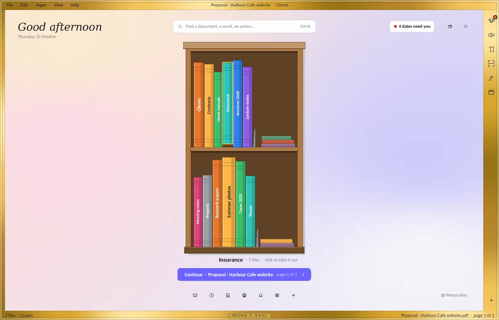
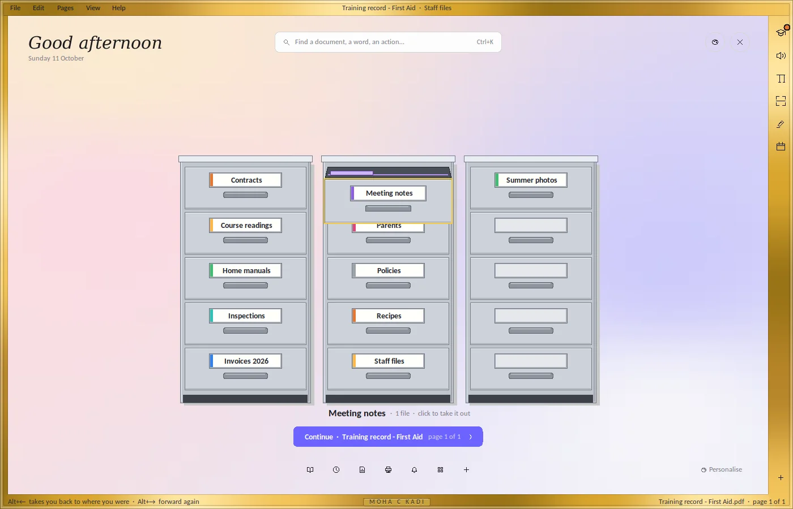
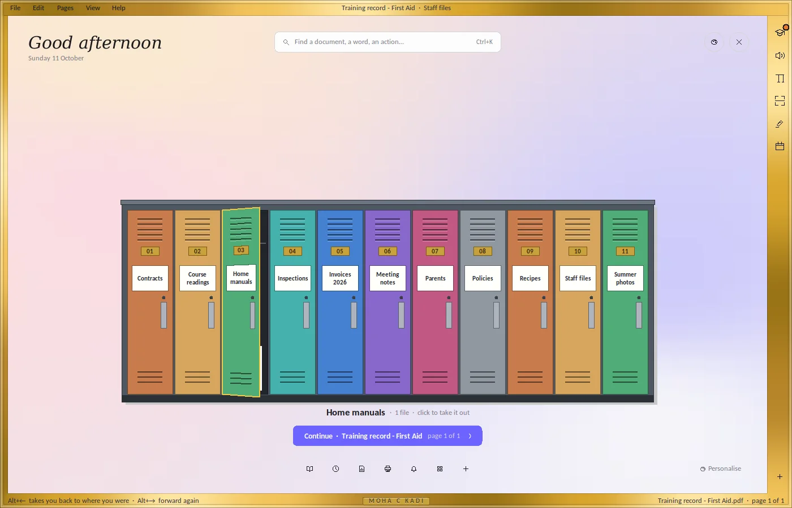
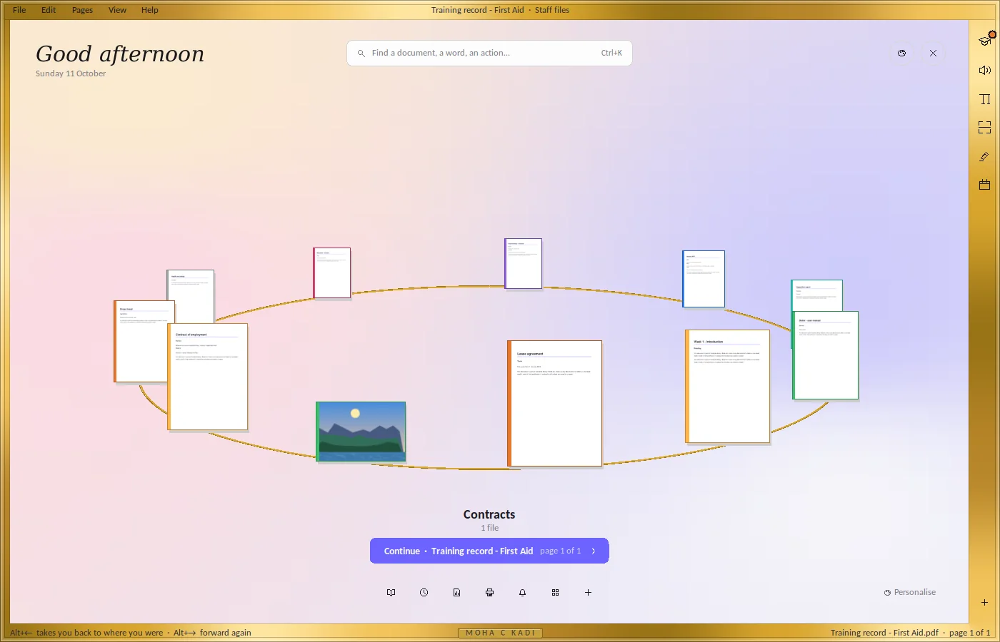
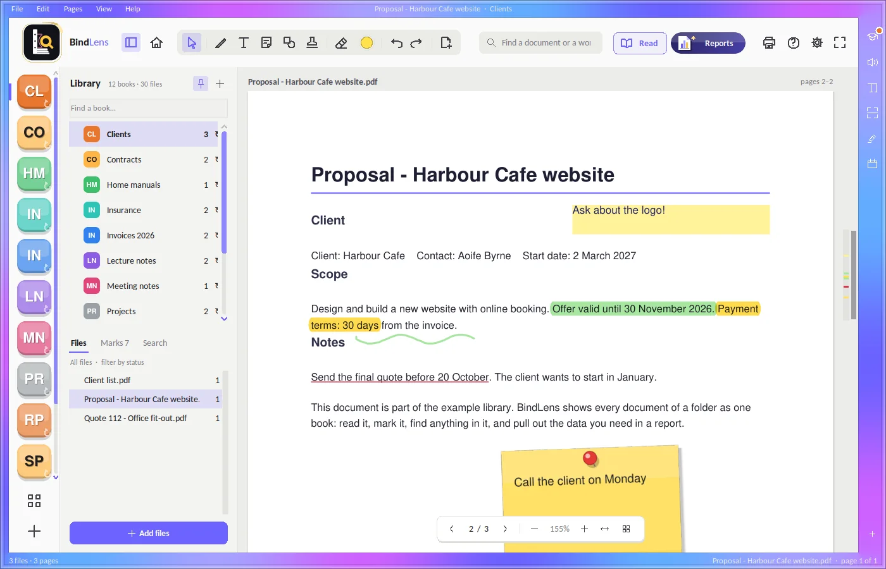
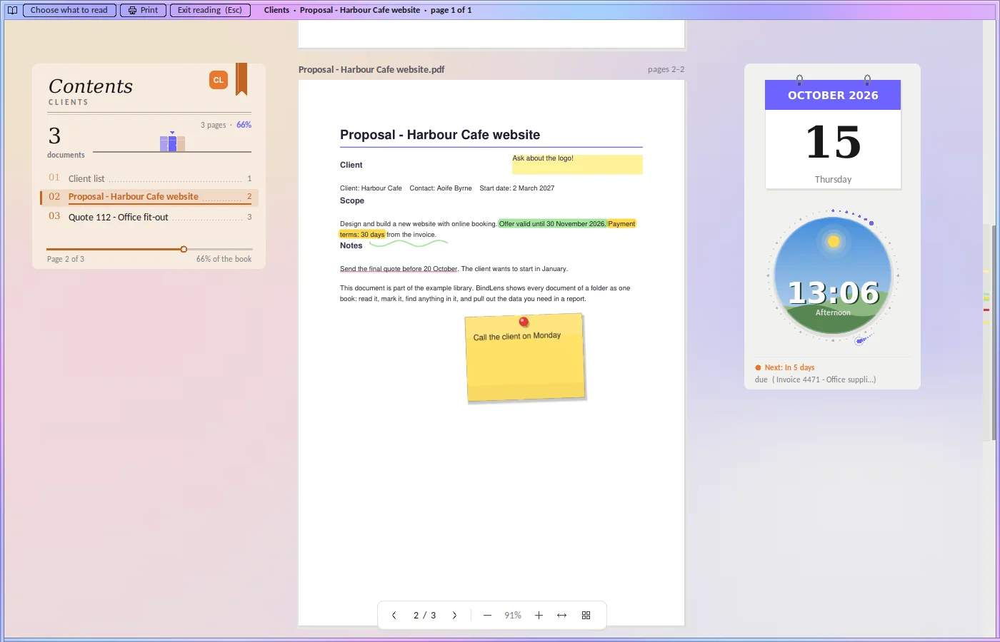
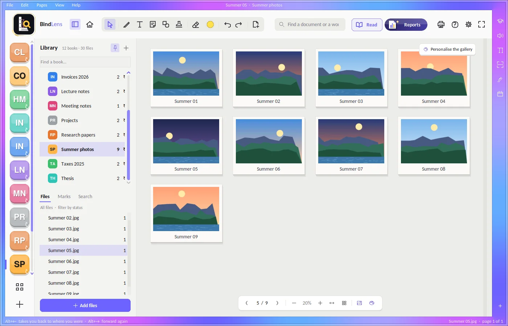
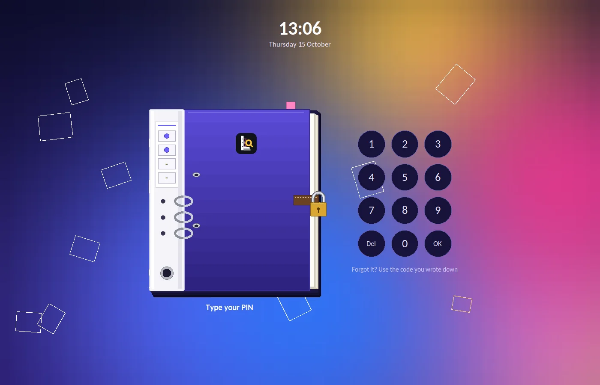
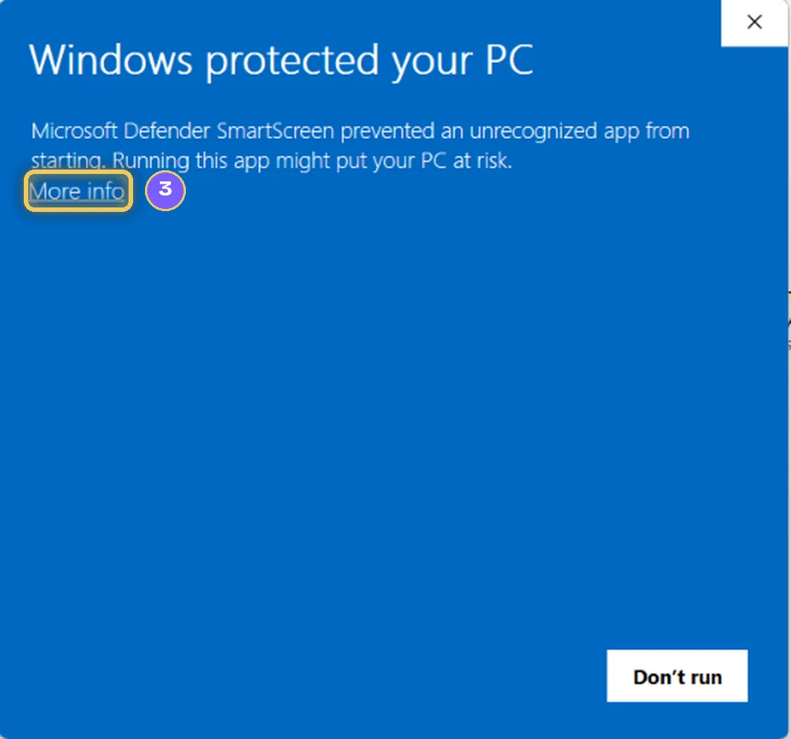
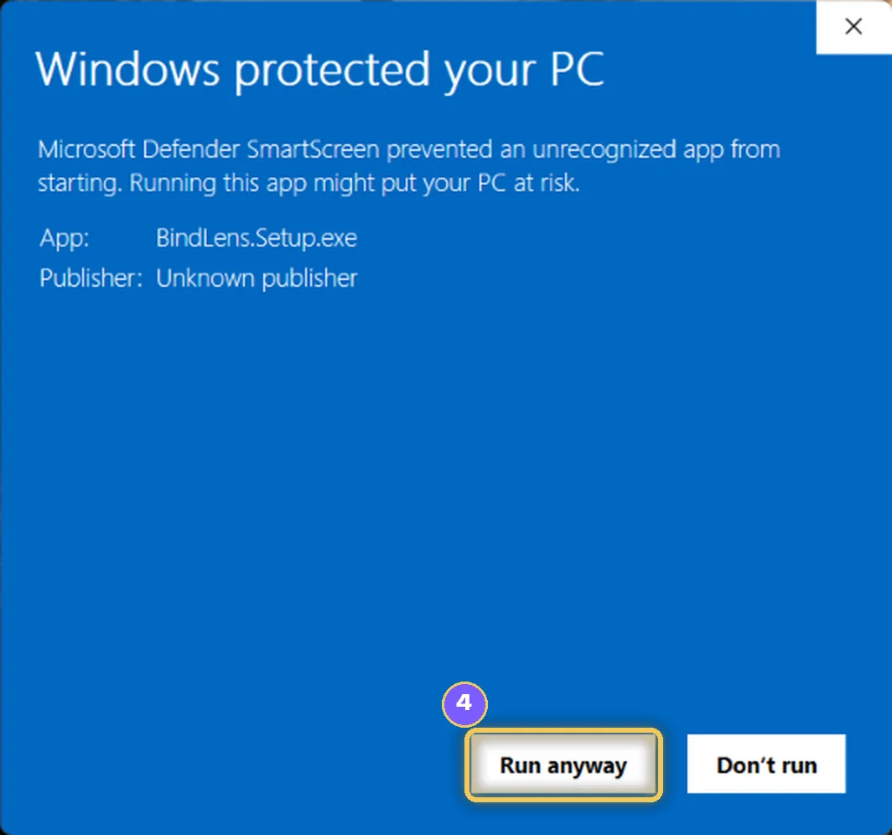

Your documents, bound into books.
Choose a folder. Every PDF, Word file, spreadsheet and photo in it becomes one book you can read, mark and search. Your files stay where they are, and nothing leaves your computer.
Proposal - Harbour Cafe website
BindLens in two minutes
Every chapter of the app, recorded from BindLens itself (the names in it are made up). With sound.
Three steps, no setup
Add a folder
It becomes a book: all its documents one after another, in order. Folders inside it become chapters. Nothing is copied or moved.
Read and mark
Highlight, underline, write, draw, stamp or tick. Your marks are saved inside the original PDF, and every one of them can be taken off again.
Pull out what you need
Contacts, deadlines, invoices and tables come out as a report in seconds. Save it as PDF, Word or Excel, or print it.
BindLens, as it is








Real screenshots of BindLens 1.0 with an example library (the names and dates are made up).
Everything in the folder, in one place
Every kind of file
PDF, Word, Excel, PowerPoint and photos in one book. With Microsoft Office or LibreOffice installed, Office pages show exactly as they look.
Marks inside your PDFs
Highlighter, pen, text, sticky notes, shapes, stamps, ticks and crosses. One file, no copies. Undo anything, any time.
Reports in seconds
Contacts, deadlines, invoices and money, tables as they are, a person across all files, charts that say what they show.
What needs you
Contract renewals, invoice due dates, insurance renewals and submission deadlines found in your documents, with a reminder before they come. Add them to Outlook or Google Calendar.
Find anything
Ctrl+K finds document names, words inside them and actions. Scanned pages are read too, so you can search them.
Calm reading
A quiet reading mode with the contents beside the page. A folder of photos opens as a gallery and plays as a slideshow; videos play inside, big or in a corner.
Print and scan
Print straight to your printer, with no PDF program needed. Scan from a scanner, the camera or phone photos, straightened and cleaned.
A PIN if you want one
Lock BindLens, or a single book, with a four-digit PIN on a shared computer. Correct a scanned page right on the scan, too.
Make it yours
Themes, colours and backgrounds, a frame of slowly flowing colour round the window, and your books at Home on a turning circle, in a bookcase or a filing cabinet.
Deadlines, before they pass
BindLens reads the dates in your contracts, invoices, insurance papers and project plans, and lists what is coming up. Double-click a row to open its page. Names, emails and phones are found by what each column holds, whatever its title says.
| Document | What | Date | Status |
|---|---|---|---|
| Invoice 4502 - Cleaning | Payment due | 30 Sep 2026 | Overdue |
| Home insurance | Renewal | 2 Nov 2026 | In 17 days |
| Office lease - Main Street | Renewal notice | 30 Nov 2026 | In 45 days |
| Thesis - Chapter 1 | Submission | 15 Jan 2027 | OK |
Nothing leaves your computer.
For offices, universities, freelancers and anyone who keeps important documents. BindLens has no account, no cloud and no AI. It works on your computer, with your files where they are.
- Your documents, marks, notes and settings stay on your computer.
- BindLens collects nothing about you and sends nothing anywhere.
- It uses the internet only when you ask: a photo for the background, a calendar link you add, or the data to read scans.
- Every change it makes to your folders is written down, so you can check it.
Anyone with folders of documents
Offices
Invoices, contracts, quotes and letters: read, sign, stamp and pull the numbers out.
Universities and research
Readings, lecture notes, papers and your thesis as books: highlight, find any word, make a summary sheet.
Freelancers
Clients, proposals, projects and deadlines in one place, with the dates that need you.
Paperwork at home
Bills, taxes, insurance, manuals and warranties: each folder a book you can find things in.
Good to know
Does BindLens change my files?
Only when you mark a PDF: your marks are saved inside that PDF. Nothing is copied, moved or renamed unless you ask, every mark can be taken off again, and Help › What BindLens changed in my folders lists every change.
Do I need the internet?
No. BindLens works offline. It goes online only when you ask for a photo, add a calendar link or ask it to read scanned pages for the first time.
Which computers does it run on?
Windows 10 and Windows 11. On Mac and Linux it can be run from its source code with Python.
A blue window appears when I install it. What do I click?
Click More info, then Run anyway. See How to install.
Where are my settings kept?
On your computer, in your user folder (%APPDATA%\BindLens). They stay when you update BindLens.
Is BindLens open source?
Yes. BindLens is free software under the GNU Affero General Public License v3, and its source code comes with the program. The name BindLens and its logo are not part of that licence.
How to install
- Download
Click Download for Windows and save BindLens.Setup.exe.
- Open it
Double-click BindLens.Setup.exe in your Downloads.
- Click More info
If a blue window appears.
- Click Run anyway
The installer opens.
- Install and open
Click Install, then open BindLens from its icon on the desktop.


BindLens for Windows
Version 1.0 · Windows 10 and 11 · free · one installer, no administrator rights needed.
How to install, step by step